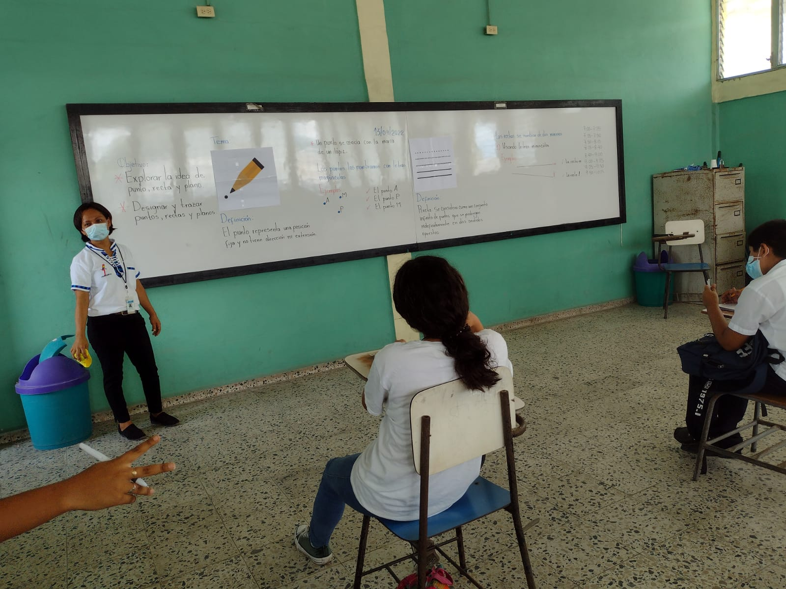
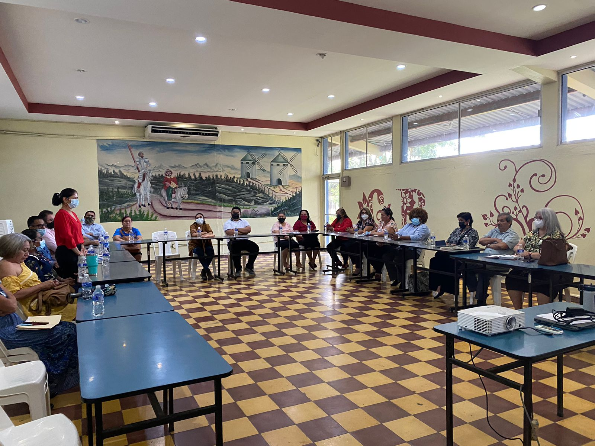
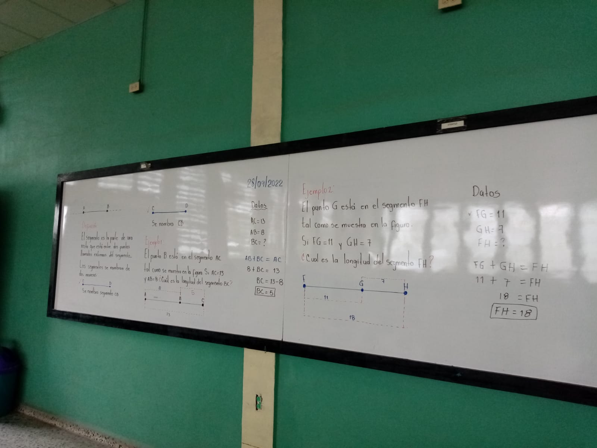
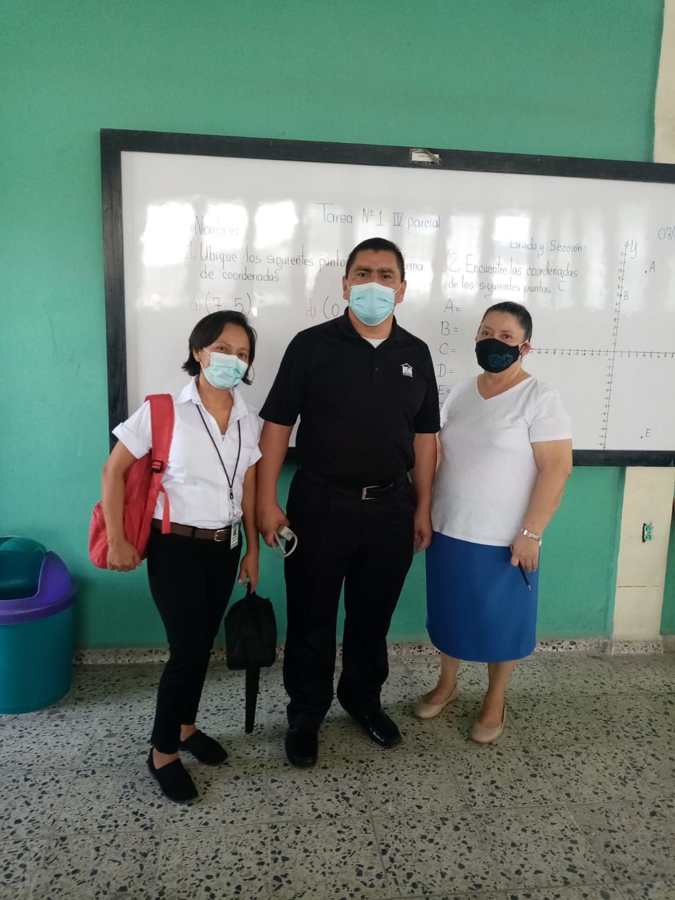
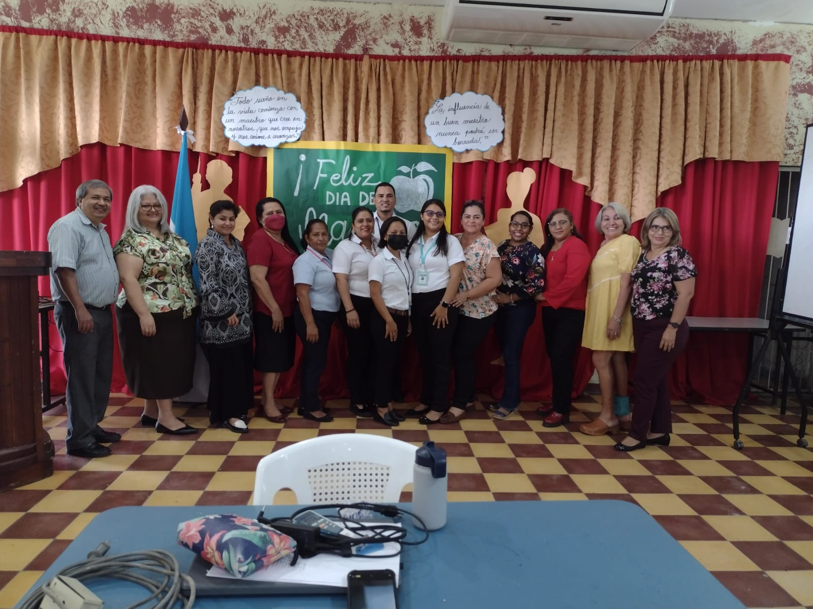
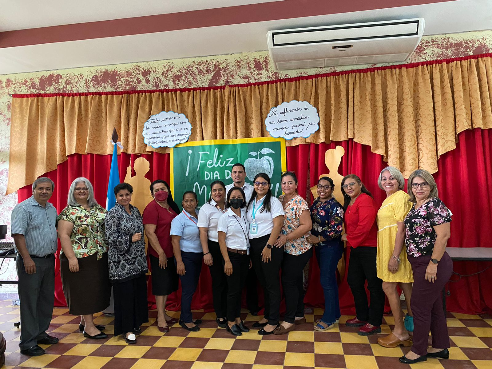
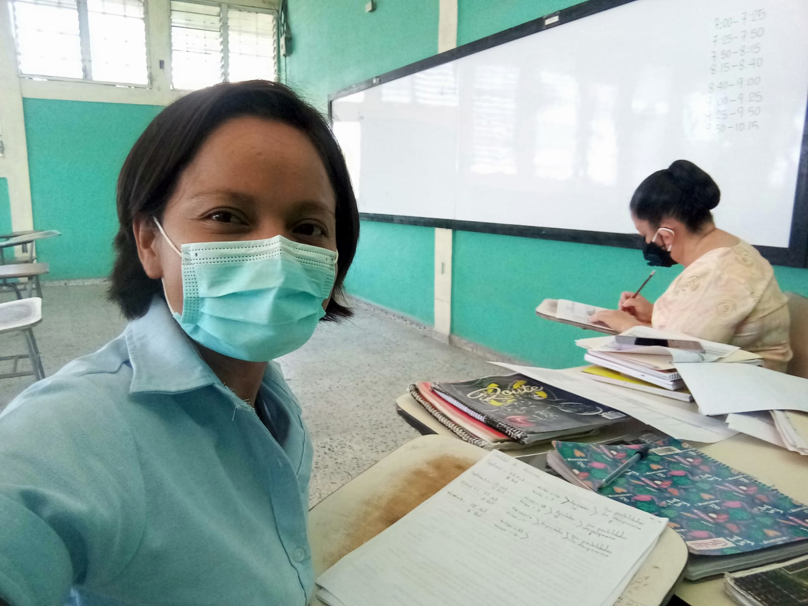
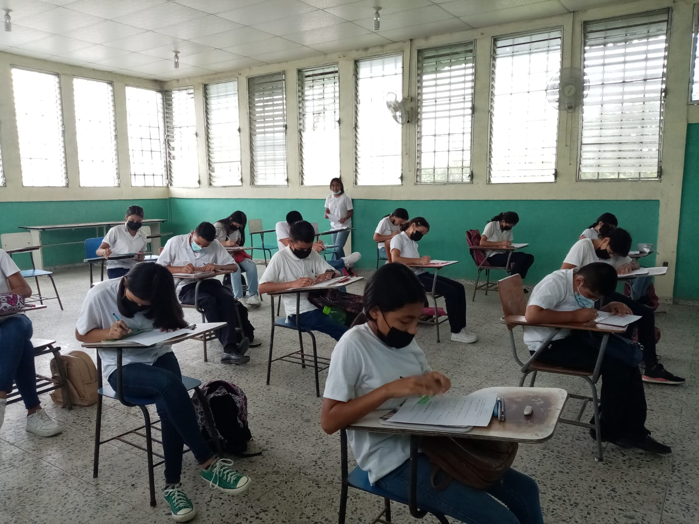

Perfil profesional
Soy profesora de matemáticas culminando su carrera universitaria en la Universidad Pedagógica Nacional Francisco Morazán campus San Pedro Sula, estudio la carrera de Licenciatura en Matemáticas.
Maria Dora Ines Arriaga Hernandez.
Profesora del area de matemáticas.
- Naci: 21 de Enero 1985
- Identidad: 1016-1985-00102
- Telefono: +504 9666- 4864
- Municipio: Choloma, Cortes, Honduras
- Edad: 37
- Titulo: Bachiller en confección industrial
- Correo: arrmariahernandez@gmail.com
- Estado Civil: Casada
En el presente portafolio pretendo dar a conocer las experiencias obtenidas en el desarrollo de mi práctica profesional II, en la cual pude aplicar los conocimientos, habilidades y destrezas adquiridos durante mi formación docente. Ejecutar esta práctica tenía como objetivo primordial poder desenvolverme de manera adecuada en el proceso de formación educativo ya que enriquece y contribuye a mi desarrollo profesional. Siguiendo los lineamientos dados por nuestro asesor de práctica de la carrera: Profesorado de Matemáticas en el grado de Licenciatura de la Universidad Pedagógica Nacional Francisco Morazán el Master Rafael Pacheco, la práctica la desarrolle en tres etapas: etapa de observación, etapa de planificación y etapa de ejecución, describiré de forma puntual lo realizado en cada etapa y los datos relevantes de las mismas.
Datos de la práctica
Mi práctica profesional la desarrolle en las instalaciones del Instituto Gubernamental Cristo Rey, mis profesoras tutoras fueron la Licenciada María Estela Milla Milla (docente de matemáticas) y la Licenciada Gloria Jaqueline Varela (docente del área administrativa-consejería). Trabaje con estudiantes del tercer ciclo (7mo, 8vo y 9no grado) en la jornada vespertina de la modalidad presencial.
Estudiantes atendidos
Horas totales de trabajo
Profesores jornada vespertina
Docentes del área de matemáticas
Documentos del Portafolio
La importancia de un portafolio radica en que informan del proceso personal seguido por el estudiante, permitiéndole a él y los demás ver sus esfuerzos y logros, en relación a los objetivos de aprendizaje y criterios de evaluación establecidos previamente. Tomando en consideración lo que es y la importancia del portafolio docente, presento mi portafolio, el cual contiene las evidencias del desarrollo de mi práctica profesional.
- Todos los archivos
- Perfil profesional
- Planificaciones y Recursos
- Informes y proyectos
Anexos
Algunas imágenes de mi trabajo durante la práctica profesional docente.
 Definición de punto y linea, alumnos de séptimo grado.
 Presentación de informe de práctica y proyectos de área.
Licenciadas tutoras de la práctica docente.
Invicación para presentación de informe de práctica y presentación de proyectos de área.
 Desarrollo del plan de pizarra.
 Primer dia de práctica, presentacion con tutores y asesores.
 Grupo estudiantes en práctica profesional IGCR.
 Grupo estudiantes en práctica profesional IGCR.
 Tiempo para revisión de tareas y planificación de clases.
 Tutorias a estudiantes reprobados en la clase de matemáticas.